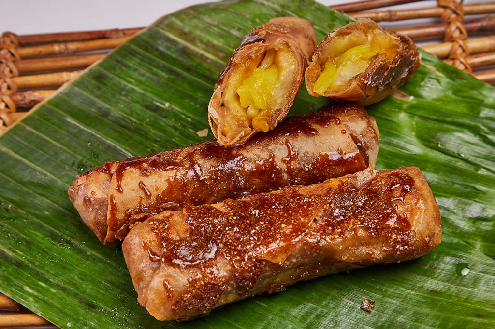

Turon

What is Turon?
Turon is a popular Filipino snack, sold by street vendors or peddled within barangays by entrepreneurial mothers. Turon is made of sliced saba bananas, wrapped and rolled in spring roll (lumpia) wrappers,fried until the wrapper is crisp and coated with caramelized brown sugar.
Ingredients:
- 6 pieces Saba banana
- 165g ripe jackfruit
- 300g sugar
- 12 pieces lumpia wrapper
- 448g cooking oil
Steps:
- Roll the banana on the sugar plate and ensure that the banana is coated with enough sugar.
- Place the banana with sugar coating in the spring roll wrapper and add some ripe jackfruit.
- Fold and lock the spring roll wrapper, use water to seal the edge.
- In a pan, heat the oil and put-in some sugar.Wait until the brown sugar floats.
- Put-in the wrapped banana and fry until the wrapper turns golden brown and the extra sugar sticks on wrapper.
- Serve hot as a dessert or snack. Share and Enjoy!